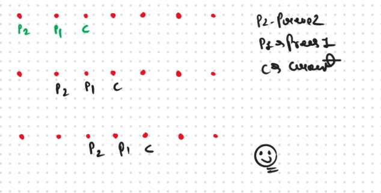

JB TAK FODEGA NHI .... TB TK CHODEGA NHI .... (MAANG)


DPL2 Climbing Stars
You are climbing a staircase. It takes n steps to reach the top.
Each time you can either climb 1 or 2 steps. In how many distinct ways can you climb to the top?
Example 1:
Input:n = 2
Output: 2
Explanation:
There are two ways to climb to the top.
1. 1 step + 1 step
2. 2 steps
Example 2:
Input: n = 3
Output: 3
Explanation:
There are three ways to climb to the top.
1. 1 step + 1 step + 1 step
2. 1 step + 2 steps
3. 2 steps + 1 step
Constraints:
- 1 <= n <= 45
This Problem is Based on the Prevesouly that Problem that we learned in DPL1. Now there is the Question and that question is:-
Important Point
How to Identify a DP problem?
When we see a problem, it is very important to identify it as a dynamic programming problem. Generally (but not limited to) if the problem statement asks for the following:
We can try to apply recursion. Once we get the recursive solution, we can go ahead to convert it to a dynamic programming one.
Steps To Solve The Problem After Identification
Once the problem has been identified, the following three steps comes handy in solving the problem:
If the question states:-
Thought Process
.jpg)
.jpg)
he base case will be when we want to go to the 0th stair, then we have only one option.
Recurance Code
function(index) {
if( index == 0) return 1
if( index == 1) return 1
return function(index-1) + function(index-2)
}
.png)
.png)
Sb Mai He Kru ...
Khud Bhi Kr le Khuch ..... Nalayk
Time & Space Complexity
Time Complexity: O(2 ^ N)Reason: Exponential Time we find out the all the Possible Path
Space Complexity: O(N)
Reason: We are using a recursion stack space(O(N))
Memoization Approch
Steps to memoize a recursive solution:Any recursive solution to a problem can be memoized using these three steps:
.png)
.png)
Sb Mai He Kru ...
Khud Bhi Kr le Khuch ..... Nalayk
Time & Space Complexity
Time Complexity: O(N)Reason: The overlapping subproblems will return the answer in constant time O(1). Therefore the total number of new subproblems we solve is ‘n’. Hence total time complexity is O(N).
Space Complexity: O(N)
Reason: We are using a recursion stack space(O(N)) and an array (again O(N)). Therefore total space complexity will be O(N) + O(N) ≈ O(N)
Tabulation Approch
Tabulation is a ‘bottom-up’ approach where we start from the base case and reach the final answer that we want.Steps to convert Recursive Solution to Tabulation one.
.png)
.png)
Sb Mai He Kru ...
Khud Bhi Kr le Khuch ..... Nalayk
Time & Space Complexity
Time Complexity: O(N)Reason: We are running a simple iterative loop
Space Complexity: O(N)
Reason: We are using an external array of size ‘n+1’.
Space Optimization
If we closely look at the relation,
dp[i] = dp[i-1] + dp[i-2]
we see that for any i, we do need only the last two values in the array. So is there a need to maintain a whole array for it?
The answer is ‘No’. Let us call dp[i-1] as prev and dp[i-2] as prev2. Now understand the following illustration.

.png)
.png)
Sb Mai He Kru ...
Khud Bhi Kr le Khuch ..... Nalayk
Time & Space Complexity
Time Complexity: O(N)Reason: We are running a simple iterative loop
Space Complexity: O(1)
Reason: We are not using any extra space Only Used a 2 Variables fro Storing the Prev Result.